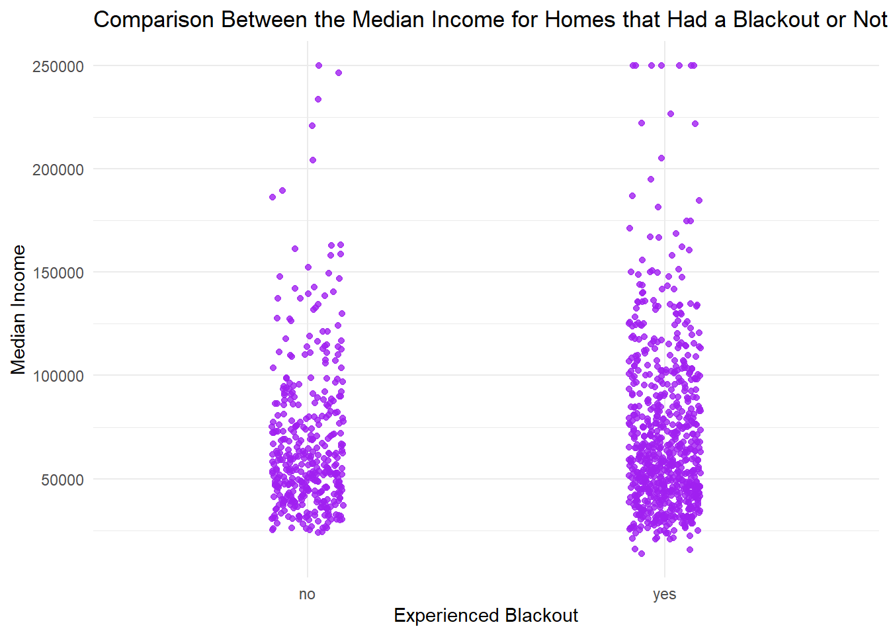

Code
library(stars)
library(tidyverse)
library(sf)
library(tmap)
library(raster)
library(terra)
library(ggplot2)December 14, 2023
Link to repository: https://github.com/BenVerst/Texas_Power_Crisis
“In February 2021, the state of Texas suffered a major power crisis, which came about as a result of three severe winter storms sweeping across the United States on February 10–11, 13–17, and 15–20.”1 For three consecutive weeks, Texas has experienced soaring temperatures, positioning the state as a contender for one of the hottest places on Earth that summer.2 For more background, check out these engineering and political perspectives.
Topics this notebook will cover:
- estimating the number of homes in Houston that lost power as a result of the first two storms
- investigating if socioeconomic factors are predictors of communities recovery from a power outage
The analysis will be based on remotely-sensed night lights data, acquired from the Visible Infrared Imaging Radiometer Suite (VIIRS) onboard the Suomi satellite. In particular, we will use the VNP46A1 to detect differences in night lights before and after the storm to identify areas that lost electric power.
To determine the number of homes that lost power, we will link (spatially join) these areas with OpenStreetMap data on buildings and roads.
To investigate potential socioeconomic factors that influenced recovery, the analysis will be linked with data from the US Census Bureau.
load vector/raster data
simple raster operations
simple vector operations
spatial joins
Use NASA’s Worldview to explore the data around the day of the storm. There are several days with too much cloud cover to be useful, but 2021-02-07 and 2021-02-16 provide two clear, contrasting images to visualize the extent of the power outage in Texas.
VIIRS data is distributed through NASA’s Level-1 and Atmospheric Archive & Distribution System Distributed Active Archive Center (LAADS DAAC). Many NASA Earth data products are distributed in 10x10 degree tiles in sinusoidal equal-area projection. Tiles are identified by their horizontal and vertical position in the grid. Houston lies on the border of tiles h08v05 and h08v06. We therefore need to download two tiles per date.
Accessing, downloading, and preparing remote sensing data is a skill in it’s own right! To prevent this notebook from being a large data wrangling challenge, the following files are prepped and stored in the VNP46A1 folder.
VNP46A1.A2021038.h08v05.001.2021039064328.h5.tif: tile h08v05, collected on 2021-02-07VNP46A1.A2021038.h08v06.001.2021039064329.h5.tif: tile h08v06, collected on 2021-02-07VNP46A1.A2021047.h08v05.001.2021048091106.h5.tif: tile h08v05, collected on 2021-02-16VNP46A1.A2021047.h08v06.001.2021048091105.h5.tif: tile h08v06, collected on 2021-02-16Typically highways account for a large portion of the night lights observable from space (see Google’s Earth at Night). To minimize falsely identifying areas with reduced traffic as areas without power, we will ignore areas near highways.
OpenStreetMap (OSM) is a collaborative project which creates publicly available geographic data of the world. Ingesting this data into a database where it can be subsetted and processed is a large undertaking. Fortunately, third party companies redistribute OSM data. We used Geofabrik’s download sites to retrieve a shapefile of all highways in Texas and prepared a Geopackage (.gpkg file) containing just the subset of roads that intersect the Houston metropolitan area.
gis_osm_roads_free_1.gpkgWe can also obtain building data from OpenStreetMap. We again downloaded from Geofabrick and prepared a GeoPackage containing only houses in the Houston metropolitan area.
gis_osm_buildings_a_free_1.gpkgWe cannot readily get socioeconomic information for every home, so instead we obtained data from the U.S. Census Bureau’s American Community Survey for census tracts in 2019. The folder ACS_2019_5YR_TRACT_48.gdb is an ArcGIS “file geodatabase”, a multi-file proprietary format that’s roughly analogous to a GeoPackage file.
We can use st_layers() to explore the contents of the geodatabase. Each layer contains a subset of the fields documents in the ACS metadata.
The geodatabase contains a layer holding the geometry information, separate from the layers holding the ACS attributes. We’ll have to combine the geometry with the attributes to get a feature layer that sf can use.
For improved computational efficiency and easier interoperability with sf, it is recommend to use the stars package for raster handling.
Steps:
stars object for each date (2021-02-07 and 2021-02-16)night_lights07_1 <- read_stars("~/MEDS/MEDS_223/Projects/Texas_Power_Crisis/data/VNP46A1/VNP46A1/VNP46A1.A2021038.h08v05.001.2021039064328.tif")
night_lights07_2 <- read_stars("~/MEDS/MEDS_223/Projects/Texas_Power_Crisis/data/VNP46A1/VNP46A1/VNP46A1.A2021038.h08v06.001.2021039064329.tif")
night_lights16_1 <- read_stars("~/MEDS/MEDS_223/Projects/Texas_Power_Crisis/data/VNP46A1/VNP46A1/VNP46A1.A2021047.h08v05.001.2021048091106.tif")
night_lights16_2 <- read_stars("~/MEDS/MEDS_223/Projects/Texas_Power_Crisis/data/VNP46A1/VNP46A1/VNP46A1.A2021047.h08v06.001.2021048091105.tif")The provided code details the process of generating a blackout mask specific to the Houston area, which was utilized for identifying affected homes. The underlying assumption was that any site registering a decrease exceeding 200 nW cm-2sr-1 was indicative of a blackout.
Steps:
NA to all locations that experienced a drop of less than 200 nW cm-2sr-1st_as_sf() to vectorize the blackout maskst_make_validst_polygonst_sfc() and assign a CRS# light difference between the two dates
light_dif <- night_lights07 - night_lights16
# assigned NA to all locations that experienced a drop of less than 200 nW cm-2sr-1
blackout_mask <- cut(light_dif, c(200, Inf), labels = "NA")
# vectorize blackout mask and fix invalid geometries
blackout_vector <- st_as_sf(blackout_mask) %>%
st_make_valid()
# defining Houston area with coords
houst_coords <- matrix(c(-96.5, 29, -96.5, 30.5, -94.5, 30.5, -94.5, 29, -96.5, 29), ncol = 2, byrow = TRUE)
# creating a polygon of Houston's coordinates and crs
houst_poly <- st_polygon(list(houst_coords)) %>% st_sfc(crs = 4326)
# cropping the blackout mask with Houston polygon
houst_crop <- blackout_vector[houst_poly, ,]
# reproject cropped dataset, add 3083 crs and convert to sf
houst_3083 <- st_transform(houst_crop, crs = 3083) %>% st_as_sf(houst_crop)To mitigate the impact of highway lighting, we employed a strategy that entailed creating a 200-meter buffer, ensuring that only regions situated more than 200 meters away from a highway were retained within our blackout mask. By taking advantage of st_read’s capability to subset using a SQL query, we can avoid reading unnecessary data from the roads geopackage, which includes information on roads other than highways.
Steps:
st_readst_bufferquery <- "SELECT * FROM gis_osm_roads_free_1 WHERE fclass='motorway'"
highways <- st_read("data/gis_osm_roads_free_1.gpkg", query = query)
Reading query `SELECT * FROM gis_osm_roads_free_1 WHERE fclass='motorway''
from data source `C:\Users\17143\Documents\MEDS\MEDS_223\Projects\assignment-3-BenVerst\data\gis_osm_roads_free_1.gpkg\gis_osm_roads_free_1.gpkg'
using driver `GPKG'
Simple feature collection with 6085 features and 10 fields
Geometry type: LINESTRING
Dimension: XY
Bounding box: xmin: -96.50429 ymin: 29.00174 xmax: -94.39619 ymax: 30.50886
Geodetic CRS: WGS 84# select the geometry highway data
highway_geom <- highways$geom
# use st_transform to make the highway geometries to 3083 crs
highway_geom <- st_transform(highway_geom, crs = 3083)
# create a buffer zone of 200 meters
highway_buffer <- st_buffer(x = highway_geom, dist = 200)
# combine the geometries and create a mask that excludes highway data
highway_buffer <- st_union(highway_buffer, by_feature = FALSE)
houst_high_mask <- houst_3083[highway_buffer, , op = st_disjoint]The code provided below explains the process of utilizing the recently generated blackout mask in conjunction with highway data to identify homes most likely affected by the power outage and ascertain the number of impacted residences.
Steps:
st_read and the following SQL query to select only residential buildingsSELECT * FROM gis_osm_buildings_a_free_1
WHERE (type IS NULL AND name IS NULL)
OR type in ('residential', 'apartments', 'house', 'static_caravan', 'detached')
# define query
query_houses <- "SELECT * FROM gis_osm_buildings_a_free_1 WHERE (type IS NULL AND name IS NULL) OR type in ('residential', 'apartments', 'house', 'static_caravan', 'detached')"
# read in highway data with SQL
houses <- st_read("~/MEDS/MEDS_223/Projects/assignment-3-BenVerst/data/gis_osm_buildings_a_free_1.gpkg/gis_osm_buildings_a_free_1.gpkg", query = query_houses)Reading query `SELECT * FROM gis_osm_buildings_a_free_1 WHERE (type IS NULL AND name IS NULL) OR type in ('residential', 'apartments', 'house', 'static_caravan', 'detached')'
from data source `C:\Users\17143\Documents\MEDS\MEDS_223\Projects\assignment-3-BenVerst\data\gis_osm_buildings_a_free_1.gpkg\gis_osm_buildings_a_free_1.gpkg'
using driver `GPKG'
Simple feature collection with 475941 features and 5 fields
Geometry type: MULTIPOLYGON
Dimension: XY
Bounding box: xmin: -96.50055 ymin: 29.00344 xmax: -94.53285 ymax: 30.50393
Geodetic CRS: WGS 84With data on the affected houses at hand, we can now align this information with socioeconomic census tract data. This allows us to identify and determine the census tracts that were impacted by the power outage.
Steps:
st_read() to load the geodatabase layersACS_2019_5YR_TRACT_48_TEXAS layerX19_INCOME layerB19013e1Reading layer `ACS_2019_5YR_TRACT_48_TEXAS' from data source
`C:\Users\17143\Documents\MEDS\MEDS_223\Projects\assignment-3-BenVerst\data\ACS_2019_5YR_TRACT_48_TEXAS.gdb\ACS_2019_5YR_TRACT_48_TEXAS.gdb'
using driver `OpenFileGDB'
Simple feature collection with 5265 features and 15 fields
Geometry type: MULTIPOLYGON
Dimension: XY
Bounding box: xmin: -106.6456 ymin: 25.83716 xmax: -93.50804 ymax: 36.5007
Geodetic CRS: NAD83Reading layer `X19_INCOME' from data source
`C:\Users\17143\Documents\MEDS\MEDS_223\Projects\assignment-3-BenVerst\data\ACS_2019_5YR_TRACT_48_TEXAS.gdb\ACS_2019_5YR_TRACT_48_TEXAS.gdb'
using driver `OpenFileGDB'Steps:
[1] "sf" "data.frame"[1] "data.frame"# change to a data_frame
sel_med_income_df <- tibble(sel_med_income)
# join census and median income data
census_data <- left_join(census_geom,
sel_med_income,
by = "GEOID_Data")
# change to the 4326 crs
census_data <- st_transform(census_data, crs = 4326)
outage_houses <- st_transform(outage_houses, crs = 4326)
# check the class
class(census_data)[1] "sf" "data.frame"[1] "sf" "data.frame"The provided code streamlines the data wrangling processes necessary for visualizations. It encompasses the creation of maps and plots to compare census tracts that underwent a blackout with those that did not.
Steps:
# crop census data with Houston border
houst_census_data <- census_data[houst_poly, ,]
# transform census data to 3083 crs
houst_census_data <- st_transform(houst_census_data, crs = 3083)
# select columns for houston census
houst_census_data <- houst_census_data |>
dplyr::select("NAMELSAD", "Shape", "median_income", "GEOID_Data")
# select columns for outage data by census track
census_outage <- census_outage |>
dplyr::select("blackout", "GEOID_Data")
census_outage_map <- census_outage |>
dplyr::select("blackout")
# convert census outage data to dataframe
census_outage_df <- as.data.frame(census_outage)
# join census outage data and census data for Houston
census_map_data <- left_join(houst_census_data,
census_outage_df,
by = "GEOID_Data")
census_map_data <- census_map_data |>
dplyr::select('median_income', 'blackout')tm_shape(census_map_data) +
# Add polygons representing median income with a heat color palette
tm_polygons("median_income",
palette = 'heat',
textNA = "Missing Income Data", # Label for areas with missing income data
title = "Median Income") + # Title
# Add a new layer using census_outage_map
tm_shape(census_outage_map) +
# Add dots to represent outages
tm_dots(shape = 16, # Shape code for filled circles
size = .2, # Size of the dots
col = "black", # Set the color of dots to black
title = 'blackout') + # Legend title for the dots
# Set the layout options for the entire map
tm_layout(main.title = "Houston Income Census Tracts that Had A Blackout", # Main title of the map
legend.outside = TRUE, # Display the legend outside the map
main.title.size = 1) # Set the size of the main title# convert census map data to dataframe
census_plot_data <- data_frame(census_map_data)
# add homes that didn't have a blackout
census_plot_data <- census_plot_data |>
mutate(blackout = replace(blackout, is.na(blackout), "no"))
# dataframe for homes with a blackout
census_plot_data_blackout <- census_plot_data |>
dplyr::select("median_income", "blackout") |>
filter(blackout == "yes")
# dataframe for homes with no blackout
census_plot_data_no_blackout <- census_plot_data |>
dplyr::select("median_income", "blackout") |>
filter(blackout == "no")
# Create a histogram using ggplot with census_plot_data_blackout
ggplot(census_plot_data_blackout, aes(x = median_income)) +
# Add histogram bars with black outline and dark green fill
geom_histogram(color = "black", fill = "darkgreen") +
labs(
title = "Median Income for Homes that Had a Blackout", # Title
x = "Median Income", # X-axis label
y = "Count" # Y-axis label
) +
# Set the theme to minimal
theme_minimal()# Create a histogram using ggplot with census_plot_data_no_blackout
ggplot(census_plot_data_no_blackout, aes(x = median_income)) +
# Add histogram bars with black outline and light green fill
geom_histogram(color = "black", fill = "lightgreen") +
labs(
title = "Median Income for Homes that Didn't Have a Blackout", # Plot title
x = "Median Income", # X-axis label
y = "Count" # Y-axis label
) +
# Set the theme to minimal
theme_minimal()ggplot(census_plot_data, aes(x = blackout, y = median_income)) +
# Add jittered points for better visualization
geom_jitter(width = 0.1, # Width of jitter
height = 0, # Height of jitter
color = "purple", # Point color
alpha = 0.8) + # Transparency of points
labs(
title = "Comparison Between the Median Income for Homes that Had a Blackout or Not", # Plot title
x = "Experienced Blackout", # X-axis label
y = "Median Income" # Y-axis label
) +
# Set the theme to minimal
theme_minimal()
median_income blackout
Min. : 13886 Length:710
1st Qu.: 43735 Class :character
Median : 60634 Mode :character
Mean : 71435
3rd Qu.: 89864
Max. :250001
NA's :3 median_income blackout
Min. : 24024 Length:402
1st Qu.: 43383 Class :character
Median : 57049 Mode :character
Mean : 67494
3rd Qu.: 80796
Max. :250001
NA's :7
Having identified the average median income for homes in the Houston metropolitan area affected by the blackout during Texas’s 2021 energy crisis, this study revealed that the average median income for homes experiencing a blackout was $71,435. Notably, this figure exceeded the average median income for homes that did not experience a blackout, which stood at $64,494.
However, it’s essential to note that this study did not consider the distribution of homes across lower and higher median income census tracts. Consequently, all census tracts were treated equally when calculating the average median income. Further investigations could explore grouping census tracts by income levels to assess the percentage of impacted versus non-impacted homes in each category. This approach aims to determine if lower median income levels were disproportionately affected compared to higher median income levels. Additionally, the study excluded homes within 200 meters of highways, potentially introducing a bias against homes with lower median incomes. Moreover, the analysis focused solely on median income within census tracts, neglecting other socioeconomic factors and medical vulnerability considerations.
It is crucial to emphasize that the primary objective of this investigation was to gain familiarity with spatial data. The results and findings presented here are preliminary and should not be cited without additional research. Overall, the aim was to provide insight into the use of different packages and functions for working with spatial data.
Wikipedia. 2021. “2021 Texas power crisis.” Last modified October 2, 2021. https://en.wikipedia.org/wiki/2021_Texas_power_crisis.↩︎
https://earth.org/texas-energy-crisis-why-is-the-states-power-grid-so-fragile/#:~:text=Texas%20Energy%20Crisis%3A%20A%20Fragile%20Power%20Grid&text=As%20shown%20in%20the%202021,freezing%20temperatures%20and%20fuel%20issues.↩︎
@online{versteeg2023,
author = {Versteeg, Ben},
title = {Texas {Power} {Crisis}},
date = {2023-12-14},
url = {https://benverst.github.io/blog/Texas_Power_Crisis/Texas_Power_Crisis.html},
langid = {en}
}